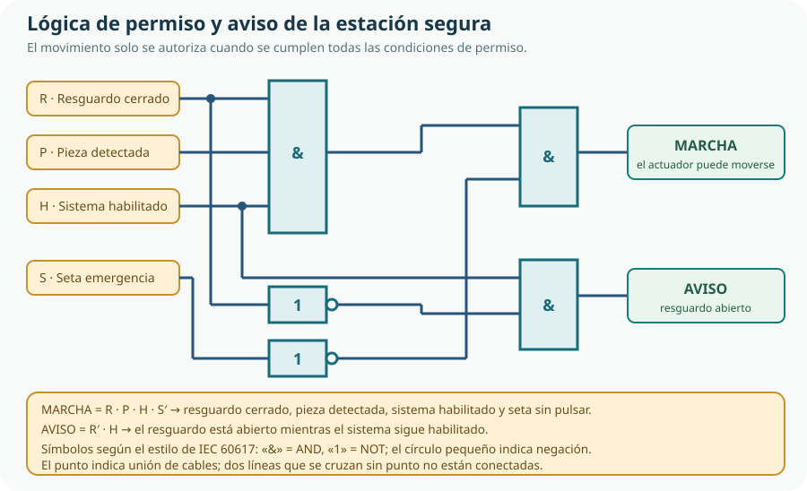

Durante el bloque B hemos construido y medido circuitos: en el Tema 5 aprendimos a montar componentes analógicos y a medir tensiones e intensidades. Ahora damos un paso distinto. Aquí no nos interesa el valor exacto de una tensión, sino decidir: ¿se cumple esta condición, sí o no? Con esa idea —dos estados, dos símbolos, 0 y 1— diseñaremos la lógica de permiso y alarma de la estación automática segura que continúa el proyecto del organizador.
- distinguir una señal analógica de una señal digital y explicar qué significa realmente «0» y «1», sin suponer que equivalen siempre a 0 V y 5 V;
- representar y convertir números en el sistema binario y usar el hexadecimal como notación abreviada;
- describir el comportamiento de las puertas AND, OR, NOT, NAND, NOR y XOR mediante su símbolo, su expresión y su tabla de verdad;
- obtener una expresión booleana a partir de una tabla de verdad y, al revés, evaluar una expresión fila a fila;
- respetar la precedencia de las operaciones y usar paréntesis para evitar ambigüedades;
- simplificar funciones lógicas sencillas con las propiedades del álgebra de Boole y las leyes de De Morgan;
- diseñar, simular y verificar de forma exhaustiva un circuito combinacional que resuelva un requisito real.
1. Señal digital y niveles lógicos: qué significa realmente 0 y 1
Una señal analógica varía de forma continua: la temperatura de una sala, la luz que recibe una célula fotoeléctrica o la tensión en un altavoz pueden tomar infinitos valores intermedios. Una señal digital se interpreta con un conjunto pequeño y contable de valores; en los sistemas que estudiamos, dos. Por eso decimos que un circuito digital «trabaja con 0 y 1».
Conviene aclarar algo fundamental antes de continuar: un circuito digital es, físicamente, un circuito eléctrico y sus señales siguen siendo tensiones que varían de forma continua. Lo digital no está en el voltaje, sino en la interpretación que hace el circuito: los valores se agrupan en bandas. Por debajo de cierto umbral, la señal se lee como nivel bajo (0); por encima de otro umbral, como nivel alto (1); y entre ambos hay una zona intermedia prohibida, que no garantiza nada.
| Señal | Estado leído como 0 (bajo) | Estado leído como 1 (alto) | Comentario |
|---|---|---|---|
| Interruptor | Abierto: no circula corriente | Cerrado: circula corriente | La convención la elige quien diseña. |
| Resguardo | Cerrado: la máquina puede trabajar | Abierto: peligro, hay que detener | Un estado «seguro» no siempre es el 0. |
| Seta de emergencia | Sin pulsar | Pulsada | Aquí 1 significa «hay emergencia». |
| Indicador luminoso | Apagado | Encendido | La salida traduce el resultado a algo visible. |
El 0 y el 1 no son, por tanto, «cero voltios» y «cinco voltios». Son dos niveles lógicos y cada familia de circuitos define sus propias tensiones. Un ejemplo real: un circuito integrado de la familia 74HC admite una alimentación amplia y sus umbrales de entrada cambian con ella. La hoja de datos de un 74HC00 —cuatro puertas NAND en un solo chip— indica una tensión de alimentación recomendada de 2 V a 6 V y, por ejemplo, una entrada se considera nivel alto a partir de 1,5 V si se alimenta a 2 V, pero necesita al menos 3,15 V si se alimenta a 4,5 V.[3]
| Parámetro | Qué indica | Valor | Consecuencia |
|---|---|---|---|
| Tensión de alimentación | Rango admitido de trabajo | 2 V a 6 V (nominal 5 V) | El mismo circuito lógico puede funcionar en sistemas distintos. |
| VIH | Tensión mínima que el circuito garantiza que lee como 1 | 1,5 V a 2 V · 3,15 V a 4,5 V | «1» depende de la alimentación, no es un valor universal. |
| VIL | Tensión máxima que garantiza que lee como 0 | 0,5 V a 2 V · 1,35 V a 4,5 V | «0» tampoco es siempre «0 V». |
| Zona intermedia | Valores entre ambos umbrales | No definida | Una entrada entre umbrales da un resultado imprevisible. |
Polaridad: acordar qué significa cada estado
Cuando una señal vale 1 al activarse, se dice que es activa por nivel alto; cuando se activa con 0, es activa por nivel bajo. Ambas convenciones son correctas y se usan a diario: muchas entradas de un sistema industrial se activan a 0 por motivos históricos y eléctricos. Lo que no es opcional es documentar la polaridad: si una persona supone que el resguardo abierto se lee como 1 y otra supone lo contrario, diseñarán circuitos distintos y uno de los dos estará peligrosamente equivocado.
2. El sistema binario: contar con dos símbolos
Si un circuito solo distingue dos niveles, el sistema de numeración natural para él es el binario, que usa dos símbolos, 0 y 1, con el mismo principio posicional que nuestro sistema decimal. En decimal, el 347 significa 3·100 + 4·10 + 7·1, es decir, 3·102 + 4·101 + 7·100. En binario hacemos lo mismo, pero las potencias son de base 2:
| Posición | 7 | 6 | 5 | 4 | 3 | 2 | 1 | 0 |
|---|---|---|---|---|---|---|---|---|
| Potencia de 2 | 27 | 26 | 25 | 24 | 23 | 22 | 21 | 20 |
| Valor | 128 | 64 | 32 | 16 | 8 | 4 | 2 | 1 |
| Ejemplo: 11012 | — | — | — | — | 1 → 8 | 1 → 4 | 0 → 0 | 1 → 1 |
Para pasar de binario a decimal se suman los valores de las posiciones que llevan 1. El ejemplo anterior, 11012, vale 8 + 4 + 0 + 1 = 13. Para pasar de decimal a binario, se busca la combinación de potencias de 2 que suma el número: 13 = 8 + 4 + 1, luego 13 = 11012. Con ocho bits (un byte) se representan 28 = 256 combinaciones distintas, de 0 a 255.
Agrupar bits: hexadecimal como puente
Leer cadenas largas de ceros y unos es incómodo y fácil de equivocar. Por eso se agrupan los bits: un nibble son cuatro bits, y un byte son exactamente dos nibbles. Como 24 = 16, cada nibble se puede escribir con un solo símbolo hexadecimal, del 0 al 9 y de la A a la F. Así, un byte se convierte en dos caracteres en lugar de ocho.
| Binario | Hex. | Decimal | Binario | Hex. | Decimal |
|---|---|---|---|---|---|
| 0000 | 0 | 0 | 1000 | 8 | 8 |
| 0001 | 1 | 1 | 1001 | 9 | 9 |
| 0010 | 2 | 2 | 1010 | A | 10 |
| 0011 | 3 | 3 | 1011 | B | 11 |
| 0100 | 4 | 4 | 1100 | C | 12 |
| 0101 | 5 | 5 | 1101 | D | 13 |
| 0110 | 6 | 6 | 1110 | E | 14 |
| 0111 | 7 | 7 | 1111 | F | 15 |
Con dos nibbles, el número 25 en decimal es 000110012 y se escribe también como 19 en hexadecimal, porque el nibble alto es 0001 y el bajo, 1001. El binario no solo sirve para números: cualquier información —un texto, una fotografía, una instrucción de un programa— se codifica con conjuntos de bits y reglas de interpretación acordadas. Cambiar el valor de un solo bit cambia el significado del dato.
3. Las puertas lógicas: seis funciones básicas
Una puerta lógica es un circuito que realiza una operación lógica elemental: recibe uno o varios niveles lógicos de entrada y produce un nivel lógico de salida según una regla fija. Su símbolo está normalizado internacionalmente; IEC 60617 es la base que recoge los símbolos gráficos para esquemas electrotécnicos.[2] Usaremos el estilo de esa norma, con el signo de la operación escrito dentro del rectángulo.
| Función | Símbolo en el esquema | La salida vale 1 cuando… | Expresión | Ejemplo |
|---|---|---|---|---|
| AND (Y) | Rectángulo con «&» | todas las entradas valen 1 | S = A · B | Puede moverse si el resguardo está cerrado y hay pieza. |
| OR (O) | Rectángulo con «≥1» | al menos una entrada vale 1 | S = A + B | Se enciende el piloto si hay aviso o hay emergencia. |
| NOT (NO) | Rectángulo con «1» y un círculo | su única entrada vale 0 | S = A′ | Alarma activa si la seta no está pulsada. |
| NAND | AND con un círculo en la salida | alguna entrada vale 0 | S = (A · B)′ | Con cuatro NAND se construyen muchas funciones. |
| NOR | OR con un círculo en la salida | todas las entradas valen 0 | S = (A + B)′ | Detectar que no se cumple ninguna condición. |
| XOR | Rectángulo con «=1» | las entradas son distintas | S = A ⊕ B | Luz que cambia con dos interruptores de una escalera. |
La forma más segura de describir una puerta no es memorizar su nombre, sino su tabla de verdad: la lista de todas las combinaciones de entrada con su salida. Para funciones de dos entradas, la tabla tiene 22 = 4 filas.
| A | B | A · B (AND) | A + B (OR) | (A · B)′ (NAND) | (A + B)′ (NOR) | A ⊕ B (XOR) |
|---|---|---|---|---|---|---|
| 0 | 0 | 0 | 0 | 1 | 1 | 0 |
| 0 | 1 | 0 | 1 | 1 | 0 | 1 |
| 1 | 0 | 0 | 1 | 1 | 0 | 1 |
| 1 | 1 | 1 | 1 | 0 | 0 | 0 |
| A | A′ (NOT) |
|---|---|
| 0 | 1 |
| 1 | 0 |
Tres ideas que conviene fijar
- NAND y NOR son «universales». Cualquier función lógica se puede construir solo con puertas NAND, y también solo con puertas NOR. Por eso es tan común el integrado 74HC00: cuatro puertas NAND idénticas en un solo chip permiten montar circuitos muy variados sin comprar nada más.
- El círculo significa negación. Un AND con un círculo en la salida es un NAND; un OR con un círculo, un NOR. El círculo también puede colocarse en una entrada para indicar que esa entrada se activa con nivel bajo.
- XOR es la puerta de las diferencias. Su salida vale 1 cuando las dos entradas no coinciden. Sirve para comparar dos señales bit a bit, detectar paridad en datos y resolver situaciones de conmutación, como la luz de una escalera controlada desde dos puntos.
Leer una puerta como una frase
«AND: se cumple si A y B». «OR: si A o B (o ambas)». «NOT: lo contrario de A». Es una forma práctica de traducir un requisito en lenguaje natural.
Comprobar una puerta con su tabla
Si dudas de tu lectura, escribe las cuatro —o dos— combinaciones y comprueba la salida. La tabla de verdad no engaña y nunca depende de la memoria.
4. Tablas de verdad y expresiones booleanas
Una expresión booleana combina variables lógicas mediante las operaciones AND, OR y NOT, y representa una función que también puede describirse con su tabla de verdad. Las dos descripciones son equivalentes y conviene saber pasar de una a otra en los dos sentidos. El vínculo entre el álgebra de Boole y los circuitos con conmutadores fue establecido en 1938 por Claude E. Shannon, que demostró que las expresiones lógicas podían analizarse y simplificarse exactamente igual que el álgebra, y que esas expresiones describían circuitos reales.[1]
De la tabla a la expresión
El procedimiento es directo: se elige cada fila en la que la salida vale 1, se escribe el producto (AND) de las variables —negadas las que valen 0— y después se suman (OR) esos productos. Por ejemplo, si F vale 1 cuando A = 0 y B = 1, o cuando A = 1 y B = 0:
F = A′ · B + A · B′
Cada uno de esos productos se llama minitérmino: describe exactamente una combinación de las entradas. Sumando los minitérminos de las filas con salida 1 se obtiene una expresión que reproduce la tabla completa, aunque no siempre sea la más sencilla: eso lo resolveremos en la sección siguiente.
| Fila | A | B | Minitérmino | F = A′·B + A·B′ |
|---|---|---|---|---|
| 1 | 0 | 0 | A′ · B′ | 0 |
| 2 | 0 | 1 | A′ · B | 1 |
| 3 | 1 | 0 | A · B′ | 1 |
| 4 | 1 | 1 | A · B | 0 |
La función del ejemplo coincide con la puerta XOR: es 1 cuando las entradas difieren. Reconocer esas equivalencias es útil, porque permite sustituir una expresión larga por una puerta que ya existe.
De la expresión a la tabla
En sentido contrario, se recorre cada fila y se evalúa la expresión con calma, resolviendo primero las negaciones, después los productos y al final las sumas. Para la expresión F = (A + B′) · C conviene añadir columnas auxiliares, porque ayudan a comprobar el resultado y a detectar errores:
| A | B | C | B′ | A + B′ | F = (A + B′) · C |
|---|---|---|---|---|---|
| 0 | 0 | 0 | 1 | 1 | 0 |
| 0 | 0 | 1 | 1 | 1 | 1 |
| 0 | 1 | 0 | 0 | 0 | 0 |
| 0 | 1 | 1 | 0 | 0 | 0 |
| 1 | 0 | 0 | 1 | 1 | 0 |
| 1 | 0 | 1 | 1 | 1 | 1 |
| 1 | 1 | 0 | 0 | 1 | 0 |
| 1 | 1 | 1 | 0 | 1 | 1 |
Notación, precedencia y paréntesis
En los libros y en los programas encontrarás maneras distintas de escribir lo mismo. No es un problema si se conoce la tabla de equivalencias y se es coherente:
| Operación | Formas habituales | Prioridad | Qué significa |
|---|---|---|---|
| Negación (NOT) | A′, Ā, ¬A, NOT A | 1.ª (la más alta) | Invierte el nivel lógico de la variable. |
| Producto (AND) | A · B, A * B, A ∧ B, A AND B | 2.ª | Las dos condiciones deben cumplirse. |
| Suma (OR) | A + B, A ∨ B, A OR B | 3.ª (la más baja) | Basta con que se cumpla una. |
La precedencia no es un capricho: es lo que hace que una expresión se pueda escribir sin llenarla de paréntesis. Igual que en aritmética «2 + 3 · 4» vale 14 y no 20, en lógica A + B · C se lee como A + (B · C). Ahora bien, cuando la intención es otra, los paréntesis son obligatorios. Estas dos expresiones se parecen mucho y hacen cosas distintas:
A + (B · C)
Vale 1 siempre que A valga 1, y también cuando A valga 0 pero B y C valgan 1 a la vez. Número de filas con salida 1: cinco.
(A + B) · C
Solo vale 1 si C vale 1 y, además, A o B valen 1. La tabla de la izquierda muestra sus tres filas con salida 1.
5. Simplificar sin cambiar la función
Obtener la expresión a partir de la tabla garantiza que es correcta, pero no que sea la más pequeña. Simplificar una función lógica es encontrar una expresión equivalente con menos operaciones. La ventaja es concreta: menos puertas significan menos componentes, menos conexiones que puedan fallar, un montaje más fácil de revisar y una verificación más rápida. Lo que no cambia nunca es la tabla de verdad: si al simplificar se modifica una sola fila, hemos cometido un error.
| Propiedad | Forma con AND | Forma con OR | Ejemplo de uso |
|---|---|---|---|
| Identidad | A · 1 = A | A + 0 = A | Eliminar términos que no aportan nada. |
| Elemento nulo | A · 0 = 0 | A + 1 = 1 | Detectar una condición imposible. |
| Idempotencia | A · A = A | A + A = A | Quitar repeticiones de la misma variable. |
| Complemento | A · A′ = 0 | A + A′ = 1 | Convertir (B + B′) en 1. |
| Doble negación | (A′)′ = A | (A′)′ = A | Suprimir dos inversores encadenados. |
| Distributiva | A · (B + C) = A · B + A · C | A + (B · C) = (A + B) · (A + C) | Sacar factor común (al revés). |
| Absorción | A · (A + B) = A | A + A · B = A | Eliminar términos contenidos en otros. |
| De Morgan | (A · B)′ = A′ + B′ | (A + B)′ = A′ · B′ | Cambiar entre AND y OR negadas. |
Ejemplo 1: extraer factor común
Sea F = A · B + A · B′. Las dos tablas parciales se diferencian solo en B, así que podemos sacar A como factor común:
Ejemplo 2: absorción
Sea F = A · B + A · B · C′. El segundo término ya incluye todo lo que exige el primero, porque exigir A, B y C′ exige también A y B. Sacando factor común: F = A · B · (1 + C′) = A · B · 1 = A · B. La propiedad de absorción permite verlo de un vistazo sin desarrollar los pasos.
De Morgan: cambiar de forma sin cambiar de significado
Las dos leyes de De Morgan permiten transformar una negación de un producto o de una suma. Se entienden bien con un ejemplo cotidiano: «no es cierto que (haya pieza y esté el resguardo cerrado)» es lo mismo que «o no hay pieza, o el resguardo no está cerrado». En símbolos, (P · R)′ = P′ + R′. Estas leyes tienen dos consecuencias muy prácticas:
- Permiten reescribir una función usando solo NAND (o solo NOR), lo que a veces reduce el número de circuitos integrados necesarios.
- Permiten convertir una señal activa por nivel bajo en una expresión con la polaridad que nos interese, dejando claro el significado.
6. Diseñar un circuito combinacional paso a paso
Un circuito combinacional es aquel en el que la salida depende únicamente de las entradas en ese instante. No tiene memoria. Diseñarlo no es un acto de inspiración: es un método ordenado que puede seguir cualquier persona del equipo y que, además, deja por escrito cómo se ha comprobado el resultado.
| Paso | Pregunta que responde | Resultado que se obtiene |
|---|---|---|
| 1. Enunciar | ¿Qué condición exacta debe cumplirse? | Una frase precisa, sin «a veces» ni «normalmente». |
| 2. Definir variables | ¿Cuántas señales de entrada hay y qué significa cada nivel? | Lista de variables con su polaridad documentada. |
| 3. Construir la tabla | ¿Qué salida corresponde a cada una de las 2n combinaciones? | Tabla de verdad completa. |
| 4. Escribir la expresión | ¿Qué minitérminos generan salida 1? | Expresión booleana en forma de suma de productos. |
| 5. Simplificar | ¿Se puede decir lo mismo con menos operaciones? | Expresión reducida, con la tabla como garantía. |
| 6. Implementar | ¿Qué puertas y conexiones realiza esa expresión? | Esquema del circuito con símbolos normalizados. |
| 7. Verificar | ¿Coincide la realidad con la tabla en todos los casos? | Resultados de la simulación o del montaje, fila por fila. |
Ejemplo resuelto completo
Enunciado: queremos una señal de aviso F que valga 1 si el sistema está habilitado (B) y, además, hay puerta abierta (A) o una pieza fuera de sitio (C). En forma de frase con sentido: «avisa si el sistema funciona y algo no está en orden». Al ser un aviso, la salida 1 encenderá un piloto.
La primera escritura es casi una traducción literal: F = A·B + B·C. Los términos comparten la variable B, así que simplificando: F = B · (A + C). Ahora comparemos el coste y la tabla de verdad de ambas formas.
| A | B | C | A·B + B·C | B·(A + C) |
|---|---|---|---|---|
| 0 | 0 | 0 | 0 | 0 |
| 0 | 0 | 1 | 0 | 0 |
| 0 | 1 | 0 | 0 | 0 |
| 0 | 1 | 1 | 1 | 1 |
| 1 | 0 | 0 | 0 | 0 |
| 1 | 0 | 1 | 0 | 0 |
| 1 | 1 | 0 | 1 | 1 |
| 1 | 1 | 1 | 1 | 1 |
Las dos columnas de salida son idénticas, fila a fila: la simplificación es correcta. En cuanto al montaje, la primera expresión exige dos puertas AND y una OR; la segunda, una OR y una AND. Además, la forma simplificada hace evidente una condición que antes había que deducir: si B vale 0, F es 0 siempre, es decir, sin sistema habilitado no puede haber aviso.
Errores frecuentes en este paso
- Perder un minitérmino: al pasar de la tabla a la expresión, basta con olvidar una fila para que el circuito falle en una situación concreta. Conviene tachar las filas ya utilizadas.
- Confundir la polaridad: escribir N en lugar de N′ porque «el sensor da 1 cuando está cerrado» sin haberlo comprobado.
- Olvidar una variable: diseñar con tres entradas cuando el requisito habla de cuatro, y comprobar solo ocho combinaciones en lugar de dieciséis.
- Dar por válida una simplificación sin comprobarla: la tabla de verdad vuelve a escribirse después de simplificar y se comparan las dos salidas.
- Suponer que «no importa» una combinación: si realmente una combinación es imposible, se documenta como indiferente; si solo lo parece, hay que decidir qué salida tendrá.
7. El proyecto del bloque B: la lógica de permiso y alarma de la estación segura
El hilo del bloque B es un encargo concreto: partiendo del organizador modular del aula-taller, diseñar una estación automática segura que coloque o mueva piezas pequeñas dentro de su zona de trabajo. La estación tiene un actuador —un motorreductor o un pequeño cilindro—, un resguardo que separa la zona de movimiento, un sensor que detecta la pieza, un interruptor de habilitación del sistema y una seta de emergencia. Nuestro trabajo en este tema es diseñar la lógica que decide cuándo se autoriza el movimiento y cómo se avisa de lo que ocurre.
De los requisitos a las variables
Traducir el encargo exige nombrar las señales con precisión y fijar su polaridad, porque de ello depende todo lo demás. Estas cuatro variables recogen las condiciones de seguridad de la estación:
| Variable | Significa | Vale 1 cuando… | Tipo de señal |
|---|---|---|---|
| R | Resguardo cerrado | el resguardo está en su posición cerrada | Condición de permiso |
| P | Pieza detectada | hay una pieza colocada en su sitio | Condición de trabajo |
| H | Sistema habilitado | se ha dado la orden general de funcionamiento | Condición de permiso |
| S | Seta de emergencia | la seta está pulsada | Señal de peligro |
Observa que S es la única variable que es activa por nivel alto cuando ocurre lo malo. Esa decisión no es caprichosa: permite que un fallo en el cableado de la línea —por ejemplo, un contacto abierto— se parezca a «la seta no se ha pulsado», y obliga a diseñar el resto del sistema con ese supuesto en mente. En un diseño real, esa elección y sus consecuencias se analizan expresamente; aquí nos sirve para recordar que la polaridad forma parte del diseño lógico.
| Requisito | En palabras | Expresión |
|---|---|---|
| Permitir el movimiento | Solo con el resguardo cerrado, la pieza detectada, el sistema habilitado y la seta sin pulsar. | M = R · P · H · S′ |
| Avisar de un resguardo abierto | Si el resguardo está abierto mientras el sistema sigue habilitado. | Aviso = R′ · H |
La tabla de verdad: las dieciséis situaciones posibles
Con cuatro entradas hay 24 = 16 combinaciones. Escribirlas todas no es un ejercicio pesado: es precisamente la garantía de que no se ha olvidado ninguna situación. Esta tabla es la referencia que utilizaremos después para verificar el circuito.
| R | P | H | S | M = R·P·H·S′ | Aviso = R′·H | Qué ocurre |
|---|---|---|---|---|---|---|
| 0 | 0 | 0 | 0 | 0 | 0 | Nada: el sistema no está habilitado. |
| 0 | 0 | 0 | 1 | 0 | 0 | Emergencia con el sistema parado. |
| 0 | 0 | 1 | 0 | 0 | 1 | Resguardo abierto: aviso. |
| 0 | 0 | 1 | 1 | 0 | 1 | Resguardo abierto y emergencia: aviso. |
| 0 | 1 | 0 | 0 | 0 | 0 | Hay pieza, pero sin resguardo ni habilitación. |
| 0 | 1 | 0 | 1 | 0 | 0 | Hay pieza y emergencia: no se mueve. |
| 0 | 1 | 1 | 0 | 0 | 1 | Resguardo abierto con pieza: aviso. |
| 0 | 1 | 1 | 1 | 0 | 1 | Resguardo abierto y emergencia: aviso. |
| 1 | 0 | 0 | 0 | 0 | 0 | Resguardo cerrado, sin pieza ni habilitación. |
| 1 | 0 | 0 | 1 | 0 | 0 | Emergencia con el sistema parado. |
| 1 | 0 | 1 | 0 | 0 | 0 | Falta la pieza: no se mueve y no hay aviso de resguardo. |
| 1 | 0 | 1 | 1 | 0 | 0 | Emergencia pulsada: no se mueve. |
| 1 | 1 | 0 | 0 | 0 | 0 | Todo listo menos la habilitación general. |
| 1 | 1 | 0 | 1 | 0 | 0 | Emergencia pulsada con pieza lista. |
| 1 | 1 | 1 | 0 | 1 | 0 | Se cumplen todas las condiciones: marcha. |
| 1 | 1 | 1 | 1 | 0 | 0 | La seta anula el permiso aunque todo lo demás esté bien. |
De las dieciséis filas, solo una activa la marcha. Eso es exactamente lo que buscábamos: que sea más fácil describir cuándo no se mueve que cuándo sí. La señal de aviso, en cambio, se enciende en cuatro filas, y todas ellas comparten la misma causa: el resguardo abierto con el sistema aún habilitado.

Señalizar los estados, no solo mover
Una máquina que no explica lo que le ocurre obliga a quien la maneja a adivinar. Por eso el diseño incluye salidas de señalización que traducen el estado lógico a algo perceptible: un piloto verde cuando la marcha está autorizada, un piloto ámbar cuando el aviso está activo, y una indicación acústica si se detecta una combinación inesperada. La señalización no mejora la seguridad por sí misma, pero hace visible el estado del sistema y ayuda a diagnosticar por qué algo no funciona.
| Situación | Condición lógica | Señalización |
|---|---|---|
| Autorizado | M = 1 | Piloto verde fijo: el actuador puede moverse. |
| Resguardo abierto | Aviso = 1 y M = 0 | Piloto ámbar: falta cerrar el resguardo. |
| Falta la pieza | R = 1, H = 1, P = 0, S = 0 | Piloto azul intermitente: hay que colocar la pieza. |
| Emergencia | S = 1 | Piloto rojo y aviso acústico: requiere revisión antes de rearmar. |
Por qué esta lógica no protege a nadie por sí sola
Conviene cerrar esta sección con una idea que la industria tiene muy clara y que un simulador nunca muestra. La primera medida de seguridad no es una puerta lógica: es diseñar el peligro fuera del alcance, y cuando eso no basta, proteger con resguardos y medidas complementarias. ISO 12100 establece precisamente ese orden —diseño intrínsecamente seguro, protección, y por último información para el uso— como metodología para evaluar y reducir el riesgo de una máquina.[6]
Cuando un sistema de control realiza funciones de seguridad, sus partes se diseñan y evalúan siguiendo metodologías específicas. ISO 13849-1:2023 describe cómo diseñar e integrar las partes de los sistemas de mando relativas a la seguridad, con características como el nivel de prestación (PL) y las categorías, e incluye requisitos sobre el propio software de seguridad.[7] Ese no es el nivel de un circuito escolar:
- Los dispositivos de enclavamiento asociados a un resguardo tienen requisitos propios de diseño y selección, e incluyen medidas para que no puedan anularse de forma previsible. ISO 14119 es el documento de referencia para esos dispositivos.[8]
- Las funciones de seguridad deben resistir fallos: un relé pegado, un cable cortado o un contacto sucio no pueden dejar la máquina en marcha. Un único circuito combinacional con puertas ideales no aborda ese problema.
- En la industria, la lógica se implementa además en autómatas programables cuya forma de programación también está normalizada: lenguajes como el diagrama de escalera (ladder) y el diagrama de bloques funcionales representan funciones lógicas y se definen en IEC 61131-3.[9]
8. Simular, verificar y documentar
Una vez escrito el esquema, hay que comprobarlo. Simular consiste en reproducir el comportamiento del circuito en un programa antes de montarlo —o cuando el montaje físico no es posible—. Ofrece dos ventajas claras: se pueden probar todas las combinaciones de entrada sin riesgo, y se puede corregir el diseño tantas veces como sea necesario sin gastar componentes.
| Herramienta | Qué ofrece | Para qué la usaremos |
|---|---|---|
| Logisim-evolution | Editor de circuitos y simulador de lógica digital, libre y multiplataforma, con sondas y cronograma para ver la evolución de las señales. | Montar el esquema de la estación, activar las entradas y comprobar las salidas en las 16 combinaciones. |
| Simulador de circuitos de Falstad | Simulador interactivo en el navegador que incluye demostraciones de lógica combinacional y de familias lógicas reales (CMOS, TTL). | Observar cómo se comporta una puerta construida con transistores y entender que el «1» ideal es una simplificación. |
Logisim-evolution se presenta como una herramienta educativa libre para diseñar y simular circuitos lógicos digitales, con simulación del circuito, cronograma y una amplia biblioteca de componentes.[4] Las demostraciones del simulador de Paul Falstad van un paso más allá y permiten ver una puerta XOR o un semisumador construidos con transistores, además de comparar familias lógicas reales.[5] Ver las dos cosas —el esquema ideal y su versión con transistores— ayuda a entender que la simulación es una representación útil, no la realidad.
Verificación exhaustiva: probarlo todo, no lo que esperamos
Un error frecuente consiste en probar solo las situaciones que ya creemos que funcionan. La verificación es exhaustiva cuando se recorren las 2n combinaciones de las entradas y se compara la salida del circuito con la tabla de verdad. En la estación serán 16 pruebas; en un circuito de cinco entradas, 32. El procedimiento puede ser siempre el mismo:
- Preparar la lista de pruebas: escribir las 2n combinaciones en orden, sin saltarse ninguna.
- Simular cada fila: activar las entradas y anotar la salida que indica la sonda o el piloto.
- Comparar columna a columna con la tabla de verdad de referencia.
- Registrar las diferencias encontradas: son la pista del error, no un fracaso.
- Corregir y repetir la prueba completa, porque un cambio puede arreglar una fila y romper otra.
- Pedir una comprobación independiente: otra persona reconstruye la tabla a partir del esquema y la compara con los resultados. Si coinciden, hay bastante confianza; si no, se ha detectado a tiempo.
Lo que un simulador no puede decirte
En un simulador los niveles son ideales: vale 0 o vale 1, sin zonas intermedias, sin ruido y sin retrasos. En un circuito real, una señal tarda un tiempo finito en propagarse por cada puerta, los contactos mecánicos rebotan al cerrarse y un cable largo puede captar interferencias. Estos efectos no suelen cambiar la lógica de un circuito combinacional sencillo, pero sí explican por qué en la industria hay que analizar expresamente el comportamiento frente a fallos y por qué no basta con que «la simulación funcione». Por eso decimos que la simulación verifica la lógica, y nada más.
| Aspecto | ¿Lo comprueba la simulación? | Cómo se aborda en un sistema real |
|---|---|---|
| Que la función lógica sea la correcta | Sí, si se prueban todas las combinaciones. | Verificación del software y revisión independiente. |
| Que el montaje esté bien cableado | No: el simulador dibuja conexiones ideales. | Inspección, continuidad y prueba funcional del montaje. |
| Que un fallo de un componente sea seguro | No. | Diseño con tolerancia a fallos, categorías y nivel de prestación (PL). |
| Que la máquina no dañe a nadie | No. | Evaluación de riesgos, resguardos y dispositivos certificados. |
Documentar: dejar rastro de las decisiones
Un circuito sin documentación es un circuito que solo entiende quien lo hizo. La documentación mínima de un diseño lógico es breve y muy útil: la lista de variables con su significado y su polaridad, la tabla de verdad, la expresión final y las simplificaciones realizadas, el esquema con símbolos normalizados —IEC 60617 recoge los símbolos oficiales[2]—, los resultados de la simulación y un registro de los cambios, indicando qué se modificó y por qué. Herramientas de automatización industriales, como las que siguen IEC 61131-3, se apoyan exactamente en esos mismos documentos.[9]
Comprueba lo aprendido
Al terminar, tu trabajo no se valora por el número de cables, sino por la solidez de las decisiones y por la claridad con que puedes justificar que el circuito hace lo que dice hacer.
| Aspecto | Qué debes demostrar | Evidencias posibles |
|---|---|---|
| Comprender la señal | Que distingues nivel lógico de voltaje y que sabes documentar la polaridad de cada señal. | Tabla de variables con su significado y su valor activo; conversiones entre binario y decimal. |
| Diseñar con método | Que puedes pasar de un requisito en palabras a una tabla, una expresión, una simplificación y un esquema. | Enunciado preciso, tabla de verdad completa, pasos de simplificación numerados, esquema con símbolos normalizados. |
| Verificar con pruebas | Que compruebas todas las combinaciones y que registras los resultados, incluidos los que no esperabas. | Lista de las 2n pruebas con su salida, comparación con la tabla, correcciones anotadas. |
| Explicar los límites | Que reconoces por qué tu diseño es un ejercicio y no un dispositivo de protección. | Nota breve sobre simulación frente a realidad y sobre las medidas de seguridad que no dependen de la lógica. |
Para repasar, contesta por escrito a estas preguntas. Si alguna te bloquea, vuelve a la sección correspondiente antes de dar el tema por terminado.
- Escribe en binario el 25 y comprueba tu resultado pasándolo de nuevo a decimal. ¿Con cuántos bits se representa cualquier número de 0 a 255?
- Explica con un ejemplo por qué un «1» lógico no es siempre 5 V y qué papel juegan los umbrales de un circuito integrado.
- Completa y comprueba: un AND entrega 1 si ___ entradas valen 1; un XOR, si las entradas son ___; un NOR, si ___ entradas valen 0.
- Escribe la expresión booleana de la orden de marcha de la estación y explica, en palabras, por qué la seta aparece negada.
- Aplica De Morgan a (R · P)′ y comprueba que obtienes la misma tabla de verdad que el circuito original.
- Simplifica F = A·C + A·B·C y comprueba fila a fila que la tabla de verdad no ha cambiado.
- ¿Cuántas pruebas necesita tu circuito de la estación? ¿Qué pasaría si solo probaras las combinaciones en las que crees que se mueve?
Glosario del tema
- Álgebra de Boole
- Conjunto de reglas que permite operar con variables de dos valores y simplificar expresiones lógicas.
- Activo por nivel bajo
- Convención por la que una señal se considera activada cuando vale 0.
- Binario
- Sistema de numeración de base 2 que usa los símbolos 0 y 1 con valor posicional.
- Bit
- Unidad mínima de información digital: un dígito binario, 0 o 1.
- Byte
- Conjunto de 8 bits que permite representar 256 combinaciones distintas.
- Circuito combinacional
- Circuito lógico cuya salida depende únicamente de las entradas en ese instante.
- Circuito secuencial
- Circuito lógico que incorpora memoria, de modo que su salida también depende del estado anterior.
- Complemento (negación)
- Operación que invierte el nivel lógico de una variable o expresión.
- De Morgan (leyes de)
- Equivalencias que permiten transformar (A · B)′ en A′ + B′ y (A + B)′ en A′ · B′.
- Expresión booleana
- Combinación de variables y operaciones lógicas que define una función.
- Familia lógica
- Grupo de circuitos integrados con tensiones, umbrales y características eléctricas comunes.
- Hexadecimal
- Sistema de base 16 que resume cuatro bits en un solo símbolo; se usa como notación abreviada.
- Minitérmino
- Producto de todas las variables de una función, negadas o no, que corresponde a una única fila de la tabla.
- Nivel de prestación (PL)
- Característica de un sistema de mando relativo a la seguridad que expresa su fiabilidad frente a fallos.
- Nivel lógico
- Valor 0 o 1 que un circuito interpreta a partir de un rango de tensiones, no de un valor exacto.
- Polaridad
- Convención que decide con qué nivel lógico se considera activada una señal.
- Precedencia
- Orden en que se resuelven las operaciones de una expresión: primero la negación, después el producto y por último la suma.
- Puerta lógica
- Circuito que realiza una operación lógica elemental sobre una o varias entradas.
- Resguardo
- Barrera física que impide el acceso a una zona peligrosa; suele asociarse a un dispositivo de enclavamiento.
- Señal analógica
- Señal que varía de forma continua y puede tomar cualquier valor intermedio.
- Señal digital
- Señal interpretada con un número finito de niveles, habitualmente dos.
- Simulador
- Programa que reproduce el comportamiento de un circuito para comprobarlo sin montarlo.
- Suma de productos
- Forma de expresión lógica en la que se suman varios productos de variables; es la que se obtiene directamente de la tabla de verdad.
- Tabla de verdad
- Lista de todas las combinaciones posibles de las entradas con la salida correspondiente a cada una.
- Umbral
- Tensión a partir de la cual un circuito interpreta un nivel lógico como 0 o como 1.
- Validación
- Comprobación de que la solución responde a la necesidad planteada, no solo a su especificación.
- Verificación
- Comprobación, mediante pruebas, de que el resultado cumple lo especificado.
Resumen esencial
- Una señal digital es una tensión interpretada en dos bandas separadas por umbrales; entre ellas hay una zona no definida.
- El 0 y el 1 son niveles lógicos, no voltajes universales: dependen de la familia lógica, de la alimentación y del sistema.
- La polaridad de cada señal se decide y se documenta; un cambio de convención cambia el circuito.
- El binario usa dos símbolos con valor posicional; con n bits se representan 2n combinaciones, y el hexadecimal resume cuatro bits en un símbolo.
- AND, OR, NOT, NAND, NOR y XOR se describen con su símbolo, su expresión y su tabla de verdad; NAND y NOR permiten construir cualquier función.
- Toda función lógica puede expresarse como suma de los minitérminos de las filas que valen 1, y evaluarse fila a fila con columnas auxiliares.
- La precedencia es negación, producto y suma; los paréntesis son obligatorios cuando la intención es otra.
- Simplificar busca una expresión equivalente con menos operaciones; las propiedades del álgebra de Boole y las leyes de De Morgan son sus herramientas, y la tabla de verdad es la garantía.
- El diseño de un circuito combinacional sigue un método: enunciar, definir variables, tabular, expresar, simplificar, implementar y verificar.
- La verificación es exhaustiva: se prueban las 2n combinaciones y se comparan con la tabla; simular verifica la lógica, no la seguridad física.
- La lógica escolar no sustituye a los dispositivos de seguridad homologados de una máquina real.
Fuentes y recursos fiables
- [1] Shannon, C. E. — A Symbolic Analysis of Relay and Switching Circuits, tesis y artículo de 1938 (MIT DSpace) (en inglés).
- [2] IEC 60617 — Graphical symbols for diagrams (base de datos de símbolos gráficos normalizados) (en inglés).
- [3] Texas Instruments — Hoja de datos SNx4HC00, puertas NAND (PDF) (en inglés).
- [4] Logisim-evolution — Editor y simulador libre de lógica digital (repositorio oficial) (en inglés).
- [5] Paul Falstad — Circuit Simulator, demostraciones de lógica combinacional y familias lógicas (en inglés).
- [6] ISO 12100:2010 — Safety of machinery: general principles for design, risk assessment and risk reduction (en inglés; norma de pago, resumen público).
- [7] ISO 13849-1:2023 — Safety-related parts of control systems. Part 1: general principles for design (en inglés; norma de pago, resumen público).
- [8] ISO 14119:2024 — Interlocking devices associated with guards: principles for design and selection (en inglés; norma de pago, resumen público).
- [9] IEC 61131-3:2025 — Programmable controllers. Part 3: programming languages (ladder diagram, function block diagram) (en inglés).